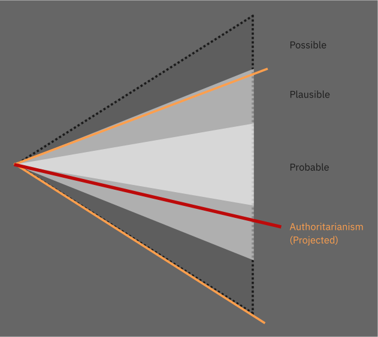
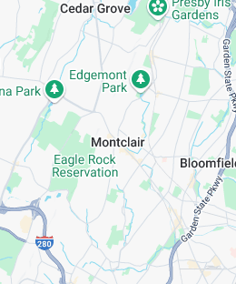
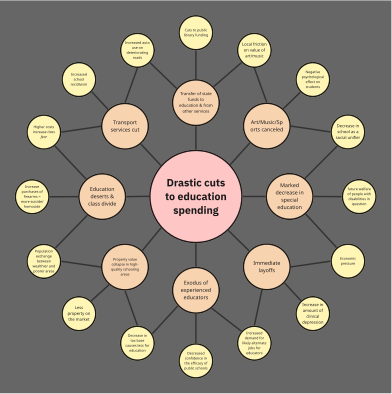

FUTURE STUDY
index.html
|
PDF
|
Miro board
|
GitHub Repository
Potential Effects of Authoritarian Creep on a Blue Suburb
Context
The residents of Montclair, NJ under a gradual, national shift to an authoratarian government over the next six to ten years.

Miro Board
link
Montclair, NJ

Signal Scanning
Personas
Drivers of Change Analysis
Drivers of Change
Based on achuri_signals.csv
Economic
- Drastically reduced funding for education
- Policy changes increase the desirability of relocation
- Increased incentive to move to private schooling
- AI “friends” modify consumer behavior
- Increase in jobs and tax base that accompanies an increase in local industrial activity
- Decreased spending on social programs
- Shifting and opposed state and federal policies affect investment decisions
- Decreased spending public schools
- Decrease in tax base for less affluent population as funding shifts to private schools
- Decrease in tax base for liberal areas as professionals choose to leave
- Reduced funding for cultural and educational institutions
- Brain drain
- Decrease in middle/upper-middle class population
- Increase in use of untraceable currency
- Capital shift towards those that can afford to use AI
- Economic pressure on blue states as a result of the federal policies
Political
- Extreme adversity between state and national governments
- Economic pressure on high property value areas
- Real estate development that runs counter to local interests (Pottersville)
- Citizens concerned about their own financial position entering local politics
- Centralized authority running counter to local desires
Social
- Incentive to leave area or country
- Local divisions caused by different views of the value of liberal policies in school
- Forced choice between school funding and values
- Increased class divide in response to distribution of natural resources
- An economic incentive to modify one’s behavior
- Decrease in exposure to diversity
- Increase in class divide
- Decrease in education level of less affluent population
- Increase social gender divide. Possibly exacerbated by male passivity to policy changes that are detrimental to women.
- Increase in left/right divide as gender definitions are either further blurred or further solidified
- Increased use and perception of use of AI in all communications. The feeling that all culture and communication is inauthentic.
- The perception of omnipresent surveillance (panopticon)
- Self-censorship of progressive views
- Conflation of artificial personalities with human interaction
- Policy and environmental changes require lifestyle changes
Environmental
- The increased reach of technology into our daily lives triggers an anti-technology reaction
- Changes in zoning, economic pressure, and environmental policy increases the divide but more and less affluent geographic areas
- Local industrial output that is or is perceived as being dangerous
- Increase in local green energy initiatives as regulatory barriers are decreased
- Decrease in local green energy initiatives as result of federal disincentives
- Federal funding and policy enabling a switch to EVs and climate change adaption would likely continue to decrease under a right leaning federal government.
- State and local level environmental initiatives would be limited due to economic pressure and may even draw disincentives from the federal government
Technological
- An economic incentive to expose personal data
- The belief that one is continuously under surveillance
- AI normalization of personalities (behavior modifiers) into objects
- Increased cost and capability of AI
- Corporate/federal data sharing
- Biometric and national identity infrastructure allows tracking and targeting of individuals
- The use of AI for policy enforcement allows for far-reaching effects of any policy change
- The use of AI for policy enforcement allows for far-reaching policy changes with a minimum number of humans involved. A decrease in oversight and transparency
- The combination of AI and urban surveillance allows for predictive policing
- The combination of AI and urban surveillance street crime
Drivers of drivers of change
- Centralization of data
- The results of surveillance
- AI targeting for transaction surveillance
- AI targeting for asset surveillance
- Social media surveillance
- Private surveillance
Analysis
Key Themes:
Economic Pressure
- Systematic defunding of blue state priorities
- Tax base erosion through professional flight
- Property value impacts in high-cost areas
Surveillance & Technology
- AI-enabled monitoring and enforcement
- Biometric tracking infrastructure
- Social media and private surveillance expansion
Educational & Cultural
- School funding weaponization
- Cultural institution defunding
- Brain drain from liberal areas
Social Fragmentation
- Class divide acceleration
- Political polarization deepening
- Community cohesion breakdown
Environmental & Infrastructure
- Local green energy policy conflicts
- Industrial development pressures
- Zoning authority challenges
Cascade Patterns:
Multiple reinforcing feedback loops where economic pressure leads to demographic sorting, which weakens political resistance, enabling further authoritarian pressure - particularly targeting the educated professional classes that define blue suburban communities.
Future Wheel
future_wheel.pdf

Speculative Artifact
American Values and Civic Engagement Survey
The Department of National Community Standards has developed a comprehensive assessment tool to better understand citizen perspectives on civic responsibility and community engagement. This scientifically-validated survey measures individual alignment with proven democratic values and constitutional principles that have made America strong.
The assessment provides valuable insights into citizen readiness for enhanced civic programs and benefits. Responses are analyzed using advanced metrics to ensure optimal placement within our community engagement framework. Citizens demonstrating exceptional civic commitment will be eligible for priority government services, educational benefits, and economic incentives designed to reward patriotic participation.
All responses are confidential and contribute to important research on maintaining stable, prosperous communities. The assessment takes approximately 15 minutes and provides immediate feedback on your civic standing within your community.
Take the Civic Assessment Survey
Participation confirms consent for data analysis and potential follow-up engagement opportunities that align with your demonstrated civic values.
Stakeholder Engagement Design